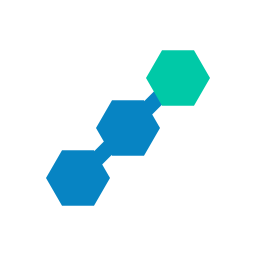
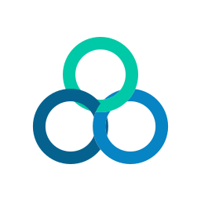
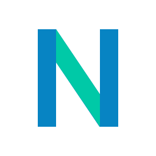
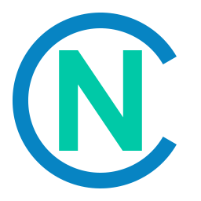
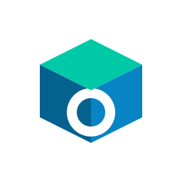

Lima arah bentuk yang berbeda. Periksa keterbacaan di ukuran kecil (16 px) dan versi satu warna (monokrom) — keduanya dipakai untuk favicon, ikon aplikasi, dan ukir/laser.
Tiga blok heksagonal naik diagonal, dihubungkan dua mata rantai pendek.

Tiga mata rantai mengait membentuk siklus — rantai blok yang juga jaringan node.

Huruf N geometris: batang biru sebagai ujung rantai, diagonal mint sebagai mata rantai.

Cincin rantai tebal terbuka 60°, melingkupi huruf N — marka lencana yang padat.

Balok isometrik bertiga muka dengan mata rantai tertembus di muka depan.
